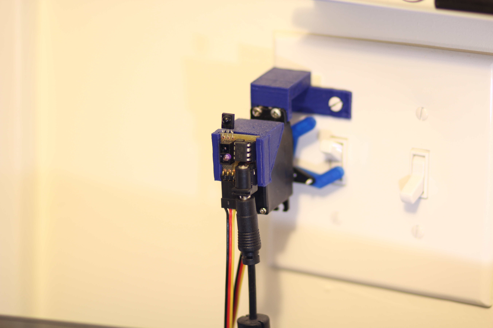

Lazy Light Switch v2

Motion detection + IR remote trigger. Designed in Altium, milled in an LPKF machine.
Turns light off/on from the bed
Fortunately I was allowed to use the LPKF machine at work to build a PCB I designed for this project. I designed the parts and printed them on my 3D printer, and used Arduino to program an ATtiny85. This time around I decided not to use a microphone and a clapping feature since I didn't really appreciate having to clap loudly right before passing out, haha.